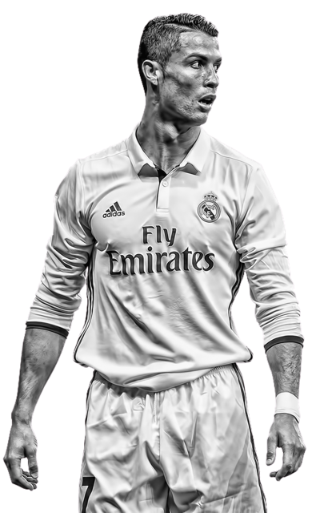
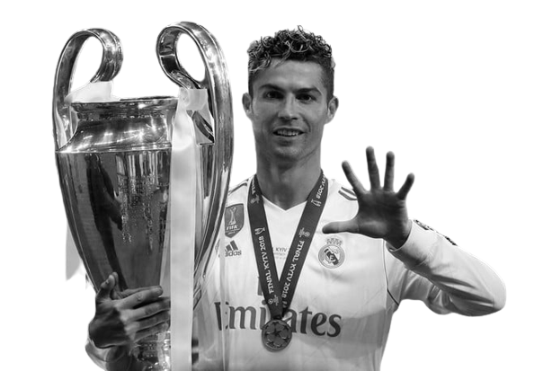

A Tribute to
Cristiano Ronaldo
“I see football as an art and all players are artists,
If you are a top artist the last thing you would do is paint a picture somebody else has already painted.
In my mind, not just this year, always,
I am always the best.And I am always going to say that.”
ACHEIVEMENTS
Christiano Ronaldo is a Portuguese professional footballer widely considered as one of the greatest players of all time. He was born on February 5, 1985, on the island of Madeira, Portugal.
Ronaldo's career in football began at Sporting CP in Portugal before moving on to play for Manchester United in the English Premier League. He then transferred to Real Madrid in 2009, where he won numerous titles including four UEFA Champions League titles and 2 La Liga titles. In 2018, Ronaldo moved to Italian giants Juventus.
Throughout his career, Ronaldo has won numerous individual awards, including five Ballon d'Or titles, which are awarded to the world's best player, and four European Golden Shoes, given to the top scorer in European football. He has also broken several records, including becoming the all-time top scorer in the UEFA Champions League, scoring over 700 career goals, and breaking the record for the most international goals by a male footballer.
